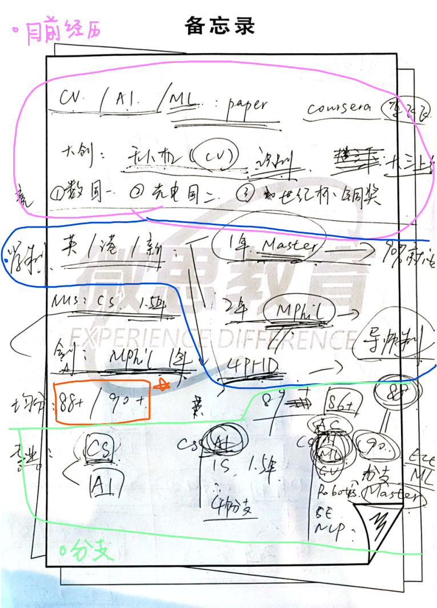
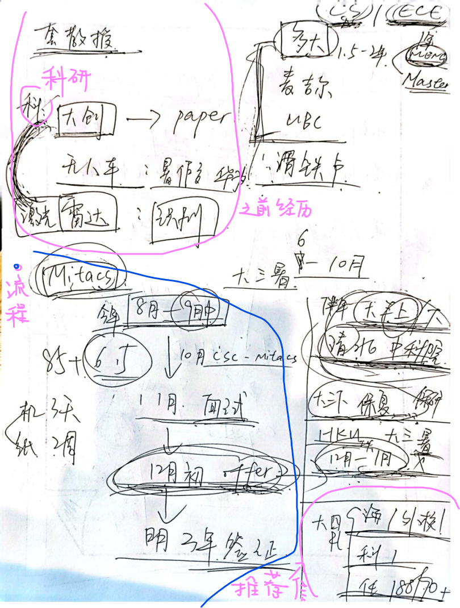
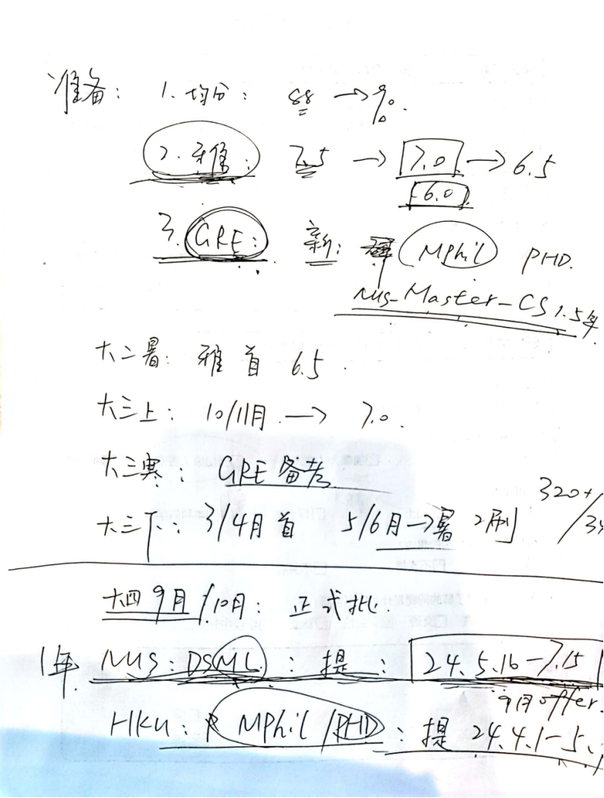

想出国了
信息的闭塞、不流畅，导致我们丢失了很多机会，但是时不时又有这种时候：很害怕去接受这些信息，希望自己可以稳定下来，不喜欢变动，喜欢单一的环境，喜欢安静的享受。但慢慢发现自己最初，在高中最累的时候，在最绝望的时候想要的并不是这种一天到晚刷视频，想着要跟女生找话题的生活：开始反思前段时间的自己，不是那种关系，却喜欢一天到晚缠着别人聊天；明明报了很多项目，却在大部分项目里都不怎么干活，别人问自己问题不想着解决想着问题抛回去；不为别人负责也不为自己负责，还经常想为啥别人不喜欢自己了——这样的自己自己都看不起，既不优秀又不上进、没有经历还自以为是，抛开这些不谈自己真的就配不上别人了（因为不是帅哥、不懂穿搭、没有颜值），没有吸引别人的地方却想着迎合别人，这种人没有任何人喜欢。
关于一切一切，感觉还是自己没有平衡好生活，但很好的点就是自己开始慢慢发现了，从现在开始慢慢分享生活，接受损失函数给自己的优化，敢于为自己发声，敢于走出生活的舒适圈，去到更陡峭的地方来优化自己，希望每次自己进入局部最优的时候都可以来看一下这篇文章。
去找机构咨询了----2023.4.6
今天去找微思（一家帮忙做留学申请的机构）老师聊了聊，感觉上自己的大学要想干点事情得从现在开始努力冲一下了，截了几张图，放在这里总结一下：
总结以前

去找校外的老师联系了，给自己介绍了一些以前没有接触的知识：
在学制方面：
- 有1年Master（授课型硕士），百分之九十的读这个之后选择都是就业；
- 有2年mphil（研究型硕士），这个就要认真选择导师；（和四年的PHD一样都是要开始找导师陶瓷）
- 有4年PHD（直博）
在成绩方面：
- 建议自己把成绩提到88+/90+
- 可以的方向：nus cs 1.5年 ； 或者最好最好就是剑桥 mphil 1年
说到最好最好这个句子的时候，我愣了一愣，第一次感觉自己的upper bounding好像就被她那么一句话给划定了，第一时间是很不服气，但想起前段时间自己的模样（还包括和学长聊的时候，他说自己的成绩已经定型了，再努力都没用了，所以想着趁着现在还有机会好好把剩余的东西抓住，对于他而言就是把还在良乡的这段日子把实验做好，把毕设想法做好，而对于自己还可以把三个学期的成绩补回来，对着overfit的话其实还不晚，把紧张感提起来，不要在睡觉的时候再想着焦虑）；第二时间坦然了，很多人都是这样，大学和社会都一样，就是温水煮青蛙，把大部分没有规划的人偷偷给他们划好上限，没有意识到机会所在，意识到机会的时候已经晚了，而自己的家庭不能给自己太多的眼界，所以自己只能不断去认识新的人、去一直接受更好的信息；
没有埋怨这样的家庭，这样的家庭给自己的幸福感是最强的，因为这样有非常强烈的感觉自己被家庭需要了。
流程

老师说不建议实习，主要搞好科研就好了，其实感觉还是因人而异，实习的话主要是老师的饭碗可能会丢，另外觉得自己还是应该好好想一下以后的出路，到底是出国还是保研，不要老想着做两手准备，这样到最后会很痛苦，用时间去换机会不划算，如果可以的话希望开始制定一下未来的路线了，虽然未来应该也会大偏不偏.
准备保研 -> 在北京继续发展（读博） -> 科研入职（就业）
准备出国 -> 读两年硕士（读博） -> 回来就业
做有影响力的工作
CS的核心竞争力有三个会被重点考虑：1. paper；2. 比赛名次；3. github repo 三位数star
在大三暑假有一个mitacs申请，为下一个暑假做准备，时间流程就是：
- 在今年的8月-9月中开始申请
- 11月份会有面试
- 12月初会有offer
- 明年3月份拿签证
换言之现在开始学英语了，开始准备雅思，同时为六级刷分做准备，在6月份考完试了？7月份可以试一次水；
就是半年时间学英语看可以到什么程度，抓住机会就去出国看看。
再下面可以详细说一下准备；在大三上和大三下可以找外校科研任务，建议在大四的时候要拿到三封推荐信：
- [ ] 海外|外校教授；
- [ ] 科研任务的学校；
- [ ] 任课老师|建议给分高的老师要推荐信：现在记起来小坦克上问人要老师联系方式是为什么了；
准备

这些目标都是可以接受的（对于自己而言）
- 均分要提到88-90之间
- 雅思在7.0到7.5之间
- 对于部分大学有gre要求，比如Mphil PHD nus master cs这些都是有要求的
- 建议在大二暑假首次考雅思到6.5以上；
- 大三上10/11月提分到7.0以上；
- 大三寒假gre备考；
- 大三下3/4月首战 5/6/暑假提到320+
关于提前批的一些信息：
- 一年NUS: dsml 9月offer
- hku: mphil/ phd
说来真的好巧好巧，自己就是大一暑假收的一堆雅思的书，没想到现在还真的有可能可以用上了。
不要说喜欢别人，不要老师缠着别人不放，相信自己好的东西可以吸引过来的。（有句话叫啥来着，人们不会记住千辛万苦去找到ta的你，ta只会记住自己千辛万苦去找到的东西）
最后想说的话，加油，更好的人一直在前面等着你。